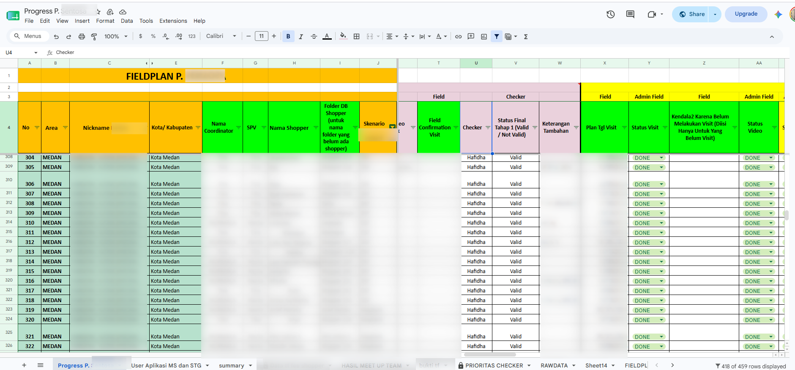

Portofolio terpilih

KLHS RDTR Teluk Pandan
Pemeriksaan data, pengisian matriks uji silang muatan KRP, dan penyusunan narasi teknis untuk penyusunan RDTR 2026–2046.
Lihat studi kasus
RDTR Kawasan Industri Lambu Kibang
Penyusunan narasi teknis Bab I–VI, dari tujuan penataan, struktur dan pola ruang, hingga ketentuan pemanfaatan ruang dan peraturan zonasi.
Lihat dokumen proyek
Risiko Kematian Ibu & Perubahan Iklim
Model risiko spasial (Hazard × Vulnerability ÷ Capacity) untuk 42 kecamatan di Garut, memadukan data iklim, sosial, dan sistem kesehatan.
Lihat studi
Pemetaan Drone & Fotogrametri
Pengolahan citra udara menjadi ortofoto dan DEM dengan Agisoft Metashape — membandingkan alur kerja RTK, PPK, dan GCP.
Lihat portofolio
Pemeriksaan Kuesioner Survei
Memeriksa 1.600+ isian kuesioner survei dengan mencocokkan jawaban terhadap bukti lapangan. Ditampilkan lewat cuplikan layar.
Lihat cuplikan
GIS Developer
Menerapkan Python untuk geospasial — mulai dari model Random Forest pemetaan populasi (UNFPA) hingga otomasi & peta web. Dibangun bertahap.
Lihat sisi developer
Studio Perencanaan Wilayah Indramayu
Proyeksi penduduk dan kebutuhan lahan permukiman, pertanian lahan basah, serta lahan kering sebagai dasar rencana pola ruang hingga 2035.
Lihat karya studio
Skripsi & Studio Perencanaan
Skripsi aksesibilitas pejalan kaki TOD Dukuh Atas (Urban Network Analysis) dan studio rencana rumah susun sederhana sewa di Krukut.
Lihat karya akademik